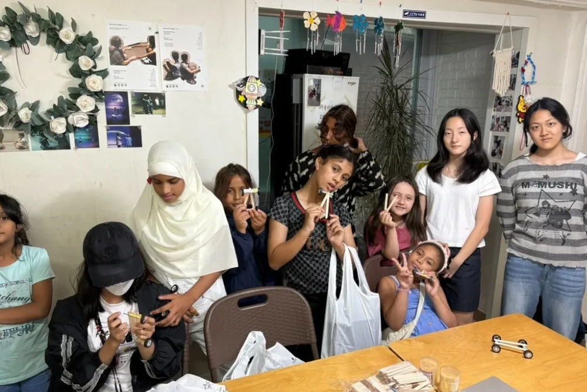
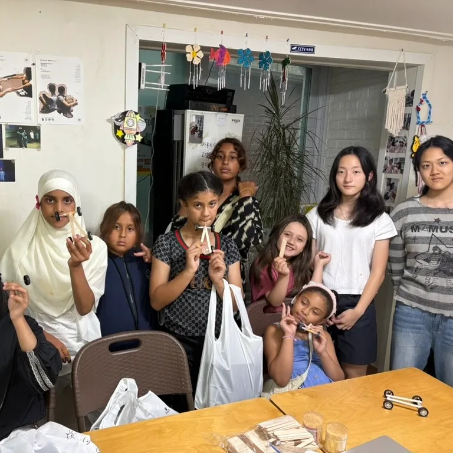
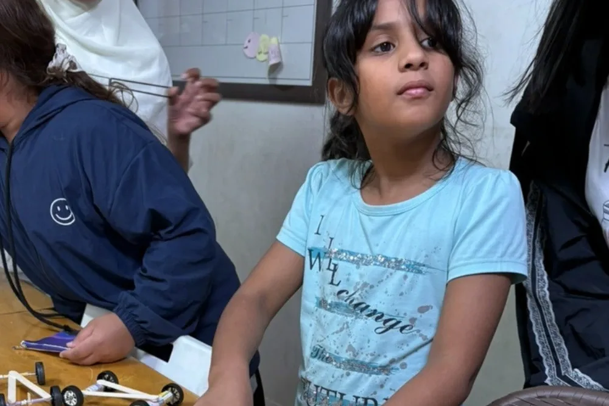
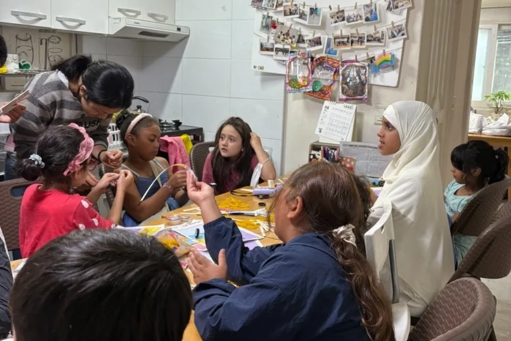
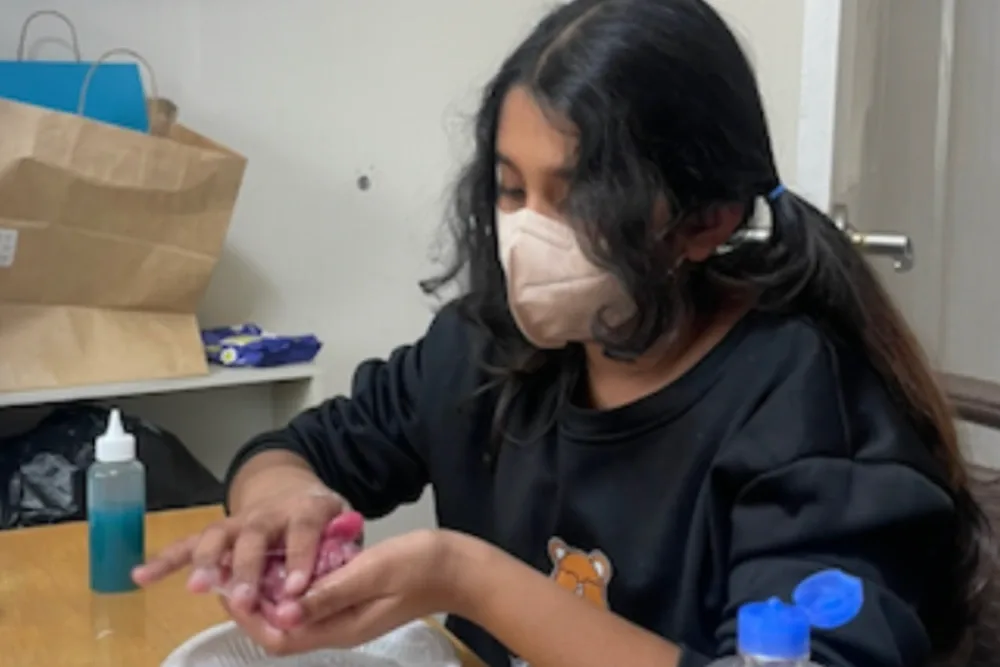
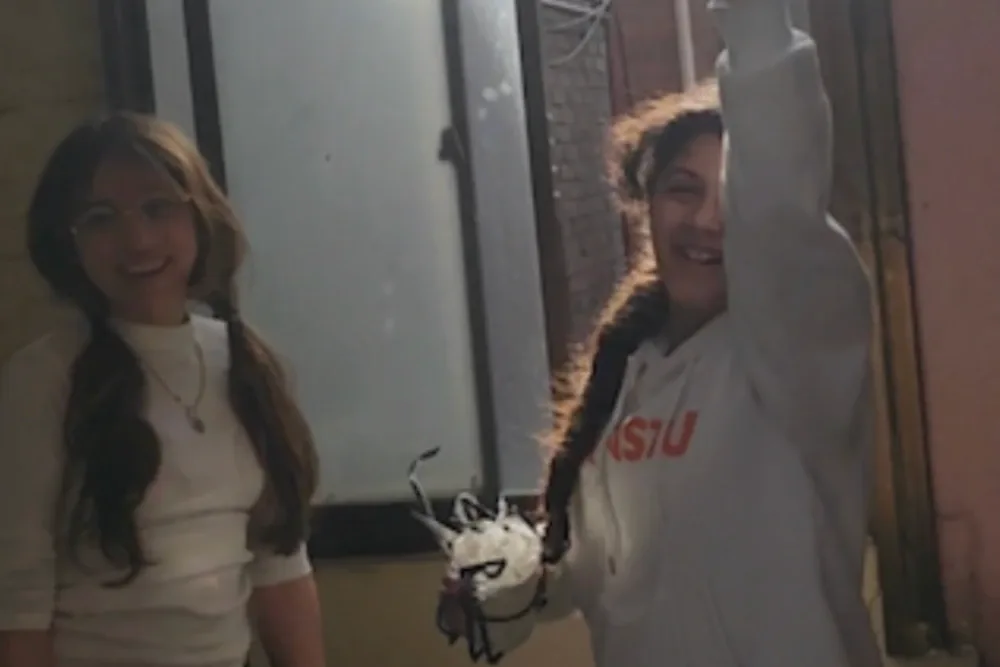

In-Person
Workshops
Hands-on STEM days at children's centers across Korea.

Why we show up in person
A podcast can inspire and a textbook can teach, but neither can put a magnet in a nine-year-old's hand and let her discover that the paperclips jump. Our in-person workshops go where quality STEM education usually doesn't: children's centers, community libraries, and after-school programs serving students — especially girls — who rarely get to do science with their hands.
Each workshop runs over several days so students don't just see an experiment once. They repeat it, change a variable, argue about the result, and leave having done real science. And because every GEMS workshop is taught by young women who were in their seat not long ago, students see that the person at the front of the room could be them.
How a workshop runs
We visit
Our team arrives with every material needed for the workshop, so the center hosts nothing but the students and a table.
Students build, test, and argue
Experiments drawn from OPAL and GEMS Lab, run by the students themselves across multiple sessions.
They take it home
Each student leaves with their worksheets and a kit of materials so the experimenting doesn't stop when we leave.
Past workshops
Photo wall





Host a workshop
Who we work with
- Children's centers and orphanages
- Community and public libraries
- After-school and weekend programs
- Schools without a dedicated science lab
We bring the materials, the worksheets, and the team. You bring a room and the students. Workshops are free; we currently serve centers in South Korea and Singapore and are open to travel further with partner support.